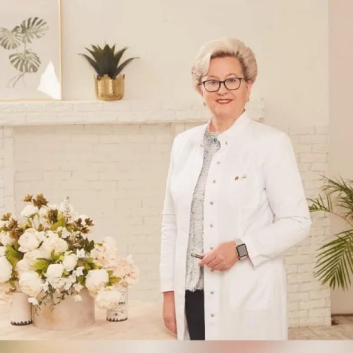

Специализация:
Гинекология
Подготовка к беременности
Диагностика проблем бесплодия
Лечение миом матки, кист яичников, эндомет-риоза, вагиноза
Лечение бесплодия
Лечение простатита, олигоспермии, ипотенции
Марина Александровна Шахова — профессор, д.м.н., профессионал с международным опытом, консультирует, проводит диагностику (в том числе УЗИ), контролирует лечение, готовит женщин и семейные пары к беременности и ЭКО.
Подготовка к ЭКО, сопровождение, проведение ЭКО в лучших клиниках Москвы и Европы – Франция, Испания
Кирова, работала ассистентом данной кафедры (1981—1993 г.г.).
В 1990 году защитила кандидатскую диссертацию на тему «Ультразвуковые и гормональные критерии оценки фето-плацентарного комплекса у женщин с экзогенно-конституциональным ожирением».
Работала доцентом на кафедре хирургических болезней с циклом акушерства и гинекологии Военно-медицинского института Федеральной пограничной службы РФ в г. Н.Новгород.
Находилась в официальной командировке по линии Министер-ства здравоохранения Российской Федерации (Здравэкспорт) в Республике Тунис (1993 – 1996 гг.) и по линии Организации Объединенных Наций в Республике Чад (1999—2001 гг.).
В 2007 году успешно защитила впервые в России докторскую диссертацию в области медицины в рамках международного со-трудничества между ГУ «НЦ АГ и П» РАМН и Университетом Овернь Клермон-Ферран, Франция на тему «Вспомогательные репродуктивные технологии в браке при мужском бесплодии».
С 2006 по 2009 гг. работала старшим научным сотрудником от-деления вспомогательных технологий в лечении бесплодия ФГУ «НЦ АГ и П им. В.И. Кулакова» Минздравсоцразвития России С февраля 2011 года занимает должность профессора кафедры акушерства, гинекологии, перинатологии и репродуктологии ФППОВ.
Организовала и провела на кафедре первый цикл тематического усовершенствования «Вспомогательные репродуктивные техно-логии в лечении женского и мужского бесплодия» с участием ве-дущих иностранных специалистов Европы и Северной Америки в области экстракорпорального оплодотворения.
Шахова М.А. является советником директора в ФГУ «НЦ АГиП им. В.И.Кулакова» Минздрава России. Автор 46 печатных научных работ и 2 рационализаторских предложений. Принимает активное участие в работе международных симпо-зиумов, научно-практических конференций, подготовке кадров. В совершенстве владеет современными методами экстракорпо-рального оплодотворения и переноса эмбрионов в полость матки, имеет высшую врачебную категорию.
Научная степень
Доктор наук.
Общая практика
Высшая категория.
Майор медицинской службы, доцент кафедры хирургических болезней с циклом акушерства и гинекологии. Военно-медицинский институт Федеральной пограничной службы РФ в г. Н.Новгород. (1996-1999 гг.).
Врач акушер-гинеколог. Организация Объединенных Наций в Республике Чад (1999-2001 гг.).
Старший научный сотрудник отделения вспомогательных технологий в лечении бесплодия. НЦ АГ и П им. В.И. Кулакова (2006-2009 гг.).
Профессор кафедры акушерства, гинекологии, перинатологии и репродуктологии. ГБОУ ВПО Первый Московский государственный медицинский университет им. И. М. Сеченова (2011 г.).
Профессор кафедры акушерства, гинекологии, перинатологии и репродуктологии. ФППОВ (2011 г.).
Советник директора. ФГБУ «НМИЦ АГП им. В.И. Кулакова» Минздрава России (2012-2016 гг.).
Руководитель. Научно-образовательные центры ВРТ им. Ф.Паулсена-старшего (2016-2018 гг.).
Начальник отдела контроля качества ВРТ, врач акушер-гинеколог стационара дневного пребывания. ФГБУ «НМИЦ АГП им. В.И. Кулакова» Минздрава России (2018 г.).
Приволжский исследовательский медицинский университет (лечебное дело) (1981 г.).
Научный центр акушерства, гинекологии и перинатологии Кулакова (акушерство и гинекология) (2006 г.).

Материалы института: itvm.ru ↗ · Информация на 26 октября 2026 года.